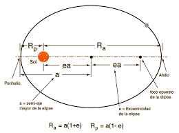
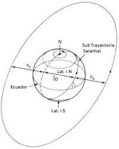
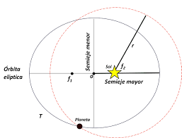

Astrónomo alemán. A partir de 1600 se dedicó a la astronomía como ayudante de Tycho Brahe, a quien sucedió como astrónomo y matemático de la corte del emperador Rodolfo II, en Praga.
Las leyes de Kepler son leyes experimentales, enunciadas por J. Kepler, sobre el movimiento de los planetas alrededor del sol.
| Ley | Definición | Foto |
|---|---|---|
| La ley de la órbita | Todos los planetas se mueven en órbitas elípticas, con el Sol en uno de los focos. |  |
| La ley de las áreas | La línea que une un planeta al Sol, barre áreas iguales en tiempos iguales. |  |
| La ley de los períodos | El cuadrado del periodo de cualquier planeta, es proporcional al cubo del semieje mayor de su órbita. |  |
He elegido a kepler para representar el campo de la ciencia porque me parece que hizo un gran avance descubriendo las tres leyes sobre el movimiento planetario